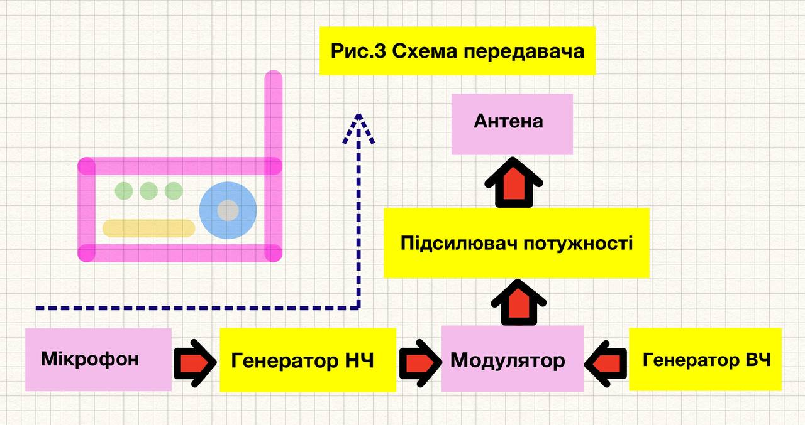

Що таке Радіозв'язок
Вступ: ціль статті доступно пояснити як працює радіозв’язок — від виникнення сигналу до його прийому й відтворення.
В статті максимально коротко викладено основні поняття і дано декілька простих схем.
Радіозв'язок — це технологія(спосіб/процес) передачі інформації через електромагнітні хвилі(радіохвилі) в радіочастотному діапазоні.
Весь процес базується на відкритті Максвелла про те, що змінні електричні струми створюють електромагнітні поля, які поширюються у просторі.
Ключові моменти циклу: Звук перетворюється в електричний сигнал, який потім модулюється у високочастотну несучу хвилю
- це дозволяє “підняти” низькочастотний аудіосигнал до частот, які ефективно випромінюються антенами.
Антени як перетворювачі: Передавальна антена перетворює електричну енергію в електромагнітні хвилі, а приймальна виконує зворотний процес.
Обробка в приймачі: Найскладніша частина - це селекція потрібного сигналу серед тисяч інших і демодуляція для відновлення оригінального звуку.
Нижче описано повний цикл роботи радіозв’язку, включаючи виникнення сигналу, його обробку, передачу, прийом та відтворення звуку.
радіозв’язок починається з виникнення сигналу, перетворення інформації (наприклад, голосу, музики чи даних) в електричний сигнал. Це відбувається так:
• Джерело інформації: мікрофон перетворює звукові коливання(голос) в електричний сигнал. Звукові хвилі викликають вібрацію мембрани мікрофона,
яка генерує змінний електричний струм, що відповідає амплітуді та частоті звуку.
• Модуляція/Демодуляція: Щоб передати цей сигнал на великі відстані, його накладають на високочастотний несучий сигнал.
Модульований сигнал готовий до передачі. Приймач виконує зворотній процес - демодуляцію. Модуляція - зміна параметрів (амплітуди, частоти, фази) хвилі? згідно з інформаційним сигналом.
Існують основні
типи модуляції:
-
Амплітудна модуляція (AM): Амплітуда сигналу-носія змінюється відповідно до інформаційного сигналу(Діодний детектор амплітуди).
Амплітуда несучої хвилі змінюється пропорційно до амплітуди інформаційного (низькочастотного) сигналу.
Частота та фаза при цьому залишаються незмінними.
-
Частотна модуляція (FM/ЧМ): (Частотний детектор - дискримінатор) Частота сигналу-носія змінюється відповідно до інформаційного сигналу, амплітуда і фаза залишаються сталою.
-
Фазова модуляція (PM) - фаза хвилі-носія змінюється відповідно до миттєвого значення інформаційного сигналу, змінюється фаза а частота та амплітуда при цьому є незмінними.
PM і FM тісно пов’язані: одна може бути отримана з іншої математично. Інші види модуляції, цифрові QAM, OFDM для даних, Цифрова: DSP-процесори (перетворення Фур'є, фільтрація).
• Підсилення та передача на антену модульованого сигналу або підсилення і демодуляція для прийнятого сигналу.
Ось схематичний цикл роботи радіозв’язку. Якість зв'язку залежить від кожного етапу цього процесу:
1. [Звук]->[Мікрофон]->[Електричний сигнал].
2. [Сигнал модулюється на несучу хвилю]->[Підсилюється]->[Подається на антену].
3. Антена випромінює радіохвилі в простір.
4. Приймальна антена вловлює сигнал на певній частоті.
5. Приймач підсилює, фільтрує, демодулює сигнал.
6. Сигнал перетворюється в звук через динамік.
1. Виникнення сигналу
Все починається з інформаційного сигналу, у нашому випадку це голос — він є низькочастотним (до кількох десятків кГц) і не може ефективно передаватися на відстань.
Мікрофон перетворює голос у електричний сигнал. Дані якщо це текст або зображення кодуються в електричні імпульси.
Звукові хвилі викликають вібрацію мембрани мікрофона, яка генерує змінний електричний струм, що відповідає амплітуді та частоті звуку,
мікрофон перетворює звукові коливання в електричний сигнал.
Радіозв’язок починається з перетворення інформації в електричний сигнал. Далі відбувається модуляція щоб передати сигнал на відстані,
його накладають на високочастотний сигнал-носій. Підсилювач потужності - підсилює модульований сигнал до рівня достатнього
для передачі на відстань.
2. Роль антени в передачі сигналу
Антена перетворює електричний сигнал у радіохвилі та навпаки. Антена — це провідник який резонує на певній частоті, це ключовий компонент для передавача/приймача.
Електричний струм, що проходить через антену, створює змінне електромагнітне поле,
яке випромінюється у вигляді радіохвиль. Форма, розмір і конструкція антени визначають її ефективність і спрямованість
це залежить від діапазону частот (наприклад, для FM-радіо — 88-108 МГц). Типи антен:
Дипольні антени (прості, для радіомовлення) - випромінює сигнал у всіх напрямках.
Спрямовані антени (для точкового зв’язку) - фокусує енергію в одному напрямку.
Параболічні антени (для супутникового зв’язку). Частота сигналу відповідає резонансній частоті антени.
Випромінювання антеною - змінний струм у антені створює електромагнітне поле(хвилі радіохвилі) яке поширюється від антени.
Ключові параметри: резонансна частота, коефіцієнт посилення, діаграма спрямованості.
У передавачі антена: Перетворює електричний сигнал в електромагнітні хвилі і випромінює їх у простір
(створене змінне електромагнітне поле коливає електрони в антені, що спричиняє випромінювання радіохвиль) оптимізує випромінювання енергії,
спрямовуючи її в потрібному напрямку .Передача сигналу: Модульований електричний сигнал подається на передаючу антену через передавач (трансмітер).
Ефективність залежить від узгодження антени з частотою сигналу та опором передавача.
У приймачі антена: Приймає електромагнітні хвилі з простору і перетворює їх назад в електричний сигнал. Радіохвилі що досягають антени,
викликають коливання електронів — електричний сигнал, який подається в приймач.
Вловлюється достатня кількість енергії від радіохвиль, щоб сигнал був достатньо сильним для обробки.
3. Робота передавача (трансмітера)
Трансмітери: Це пристрій, який генерує, модулює і передає радіосигнал. Він складається з генератора, модулятора, підсилювача потужності і антени.
- Робота трансмітера: Генератор створює високочастотний несучий сигнал. Модулятор змішує інформ-сигнал з несучим сигналом.
Підсилювач потужності підсилює модульований сигнал до рівня, достатнього для передачі на великі відстані.
Мікрофон - перетворює звук у електричний сигнал.
Модуляція - сигнал “накладається” (модулюється) на високочастотну несучу хвилю, яку генерує осцилятор.
Підсилення сигналу - Слабкий модульований сигнал підсилюється за допомогою підсилювача потужності.
Антена-передавач - перетворює електричні коливання у радіохвилі, які випромінюються в простір.
Радіопередавач складається з кількох основних блоків:
| Компонент |
Функція |
| Генератор |
Створює несучу хвилю |
| Модулятор |
«Накладає» інформацію на несучу хвилю |
| Підсилювач потужності |
Робить сигнал достатнім для передачі |
| Фільтри |
Видаляють сторонні частоти (гармоніки) |
| Антена |
Випромінює сигнал в ефір |

1. Модуляція (ключовий процес): - несучий сигнал, високочастотна синусоїда (наприклад, 100 МГц)
2. Підсилення: Потужність збільшується до десятків/сотень ват, Використовуються ВЧ-підсилювачі на транзисторах або лампах.
Передавач формує та підсилює сигнал для передачі через антену:
3. Генерація сигналу-носія: Осцилятор (наприклад, кварцовий) генерує стабільний високочастотний сигнал-носій.
4. Модуляція: Інформаційний сигнал (з мікрофона чи іншого джерела) накладається на несучий сигнал за допомогою модулятора.
Модулятор - змішує інформаційний сигнал з високочастотним несучим сигналом.
5. Підсилення: Підсилювач потужності (зазвичай транзисторний або ламповий) підвищує амплітуду сигналу, щоб він міг бути переданий на велику відстань.
6. Фільтрація: Фільтри усувають небажані гармоніки чи шум, щоб сигнал відповідав стандартам частотного діапазону.
7. Передача в антену: Підсилений модульований сигнал подається на антену, яка перетворює його в радіохвилі.
4. Поширення радіохвиль
Після випромінювання антеною радіохвилі поширюються в просторі зі швидкістю світла (близько 300 000 км/с).
Радіохвилі можуть поширюватися прямою видимістю в діапазонах VHF/UHF (УКХ/ДМ).
Вони відбиваються від іоносфери в діапазоні HF (КХ) для далекого зв’язку. Окрім відбиття, хвилі можуть огинати перешкоди
або зазнавати заломлення й дифракції залежно від частоти. Тропосферне розсіювання та поверхнева хвиля характерні для НЧ‑діапазонів (ДВ/СВ).
На якість сигналу впливають перешкоди (шум від інших пристроїв, природні явища), загасання через відстань, перешкоди й атмосферні умови.
Рефракція в атмосфері — це відхилення траєкторії радіохвиль від прямолінійного поширення через зміни показника заломлення повітря,
який залежить від температури, вологості та тиску. Інтерференція — взаємодія хвиль. Радіоприймачі борються з шумами за допомогою фільтрів і підсилювачів.
5. Обробка сигналу в радіоприймачі
Приймач обробляє прийнятий сигнал для відновлення оригінальної інформації. Вхідний контур(тюнер) вибирає потрібну частоту і фільтрує інші.
Приймальна антена має бути налаштована на частоту сигналу для ефективного прийому(резонанс). Антена приймача вловлює радіохвилі і перетворює
їх в слабкий електричний сигнал. Після прийому сигналу антеною відбуваються зворотні процеси до тих, що були в передавачі, радіохвиля індукує ЕРС у антені.
Електрорушійна сила(ЕРС) — це фізична величина, яка характеризує здатність джерела (або зовнішнього поля) створювати електричний струм у замкненому колі EMF(ElectroMotiveForce).
| Фільтрація |
Видаляє небажані частоти і шуми з сигналу. В декілька етапів в різних компонентах |
| Демодулятор |
Відновлює інформаційний сигнал з модульованого сигналу. Детектор/Демодулятор виділяє з високочастотного сигналу інформацію (звук). |
| Підсилювач |
Підсилює демодульований низькочастотний сигнал до рівня, достатнього для подальшої обробки. |
| Декодування |
Перетворює інформаційний сигнал в форму, зрозумілу для користувача. |
| Динамік |
Перетворює електричний сигнал назад в звук або іншу форму інформації. |
Робота простих радіоприймачів
Відновлення сигналу, підсилення НЧ, Фільтрація зайвих частот. Автоматичне регулювання посилення (АРП).
Супергетеродинний приймач: Сучасніший, використовує проміжну частоту для кращої селективності та чутливості.
У супергетеродинних приймачах (найпоширеніший тип, 99% сучасних приймачів) сигнал змішується з сигналом від локального осцилятора,
щоб отримати проміжну частоту (IF), яка легше обробляється. Широко застосовується в AM/FM радіо,
телевізорах і сучасних комунікаційних системах.
Супергетеродинна схема:
- Змішувач: Сигнал антени + сигнал гетеродину → проміжна частота (ПЧ)
- Переваги: Стабільне підсилення, добра вибірковість
- Типова ПЧ: 455 кГц (АМ), 10.7 МГц (ЧМ)
У простих приймачах (як AM/FM радіо) є такі процеси:
1. Підсилення вхідного сигналу: Слабкий сигнал від антени підсилюється за допомогою високочастотного
підсилювача (RF-підсилювач), щоб зменшити вплив шумів.
2. Налаштування на частоту: Тюнер (змінний конденсатор або електронний контур) вибирає потрібну частоту сигналу,
відфільтровуючи інші.
3. Фільтрація: Фільтри проміжної частоти усувають небажані сигнали та шум, залишаючи лише потрібний сигнал.
4. Демодуляція: AM детектор амплітуди(наприклад діодний) виділяє низькочастотний звуковий сигнал.
FM: частотний детектор (наприклад, фазовий дискримінатор) відновлює сигнал,
аналізуючи зміни частоти. На виході демодулятора отримуємо аналоговий звуковий сигнал.
5. Підсилення звуку: Низькочастотний підсилювач (аудіопідсилювач) підвищує потужність сигналу для динаміка.
Динамік перетворює електричний сигнал назад у звукові коливання,
які чує людина. Відтворення Аудіо інформації: - Підсилений сигнал → динамік → звукові коливання.

* Прості радіоприймачі (наприклад, кристадин або детекторний приймач) мають спрощену конструкцію.
Детекторний приймач cкладається з антени, контуру (котушка + конденсатор) для вибору частоти,
діода(або кристала) для демодуляції та навушників.
Не потребує зовнішнього живлення, оскільки сигнал від антени достатньо сильний для роботи навушників.
Використовується лише для AM-сигналів, оскільки FM складніше демодулювати без підсилення.
* Додаткові аспекти: Цифровий радіозв’язок: У сучасних системах (наприклад, DAB, SDR) сигнал оцифровується,
обробляється процесорами, що забезпечує кращу якість і стійкість до перешкод. Двосторонній зв’язок у системах типу рації (walkie-talkie)
один пристрій поєднує передавач і приймач, що дозволяє як передавати, так і приймати сигнали.
Підсумок:
Маю надію мені вдалося простими словами, донести вам що таке процес радіозвязку. Фізичні основи родіозвязку - це рівняння Максвелла які описують генерацію ЕМ-полів,
Закон Ленца-Фарадея - пояснює індукцію сигналу в антені, Теорема Шеннона визначає максимальну швидкість передачі інформації.
Всі одиниці вимірювання та їх суть а також більш детальний розбір інших процесів радіозвязку,
планую викласти в наступних статтях. Також планую статті про базові речі стостовно радіотехніки.
Області застосовування радіозвʼязку.
| Категорія |
Приклади застосування |
| Побутова електроніка |
Bluetooth-навушники, Wi-Fi в будинку, смарт-ТВ, пульти дистанційного керування |
| Телекомунікації |
Мобільний зв’язок (3G/4G/5G), супутниковий зв'язок, радіорелейні лінії |
| Комп’ютерні мережі |
Wi-Fi роутери, IoT (Zigbee, Z-Wave), Mesh-мережі |
| Транспорт |
GPS-навігація, радар, Bluetooth у авто, зв’язок між авто (V2V) |
| Охорона та безпека |
Сигналізації, відеоспостереження, RFID-карти, бездротові сенсори |
| Промисловість і наука |
Метеостанції, телеметрія, супутникові дослідження, віддалені сенсори |
| Армія та спецслужби |
Тактичний зв’язок, навігація, перехоплення, радіоелектронна боротьба |